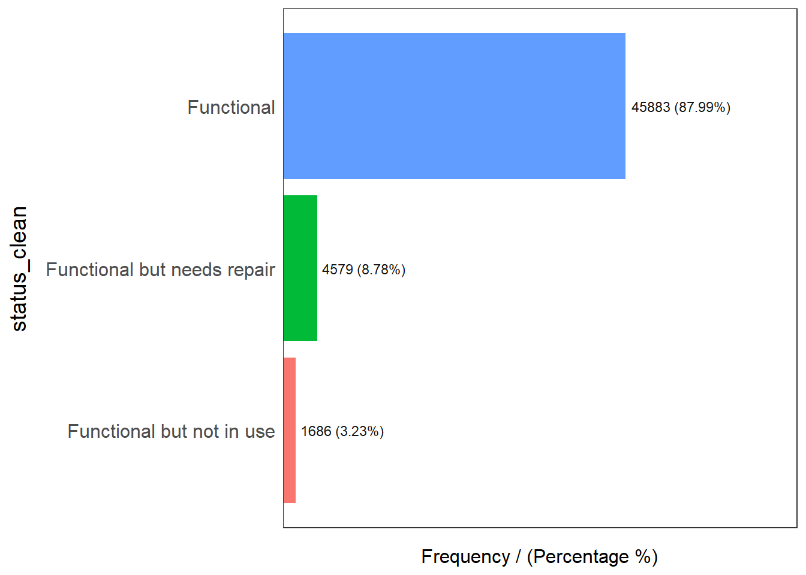

pacman::p_load(spdep,tidyverse,tmap,sf,funModeling)In Class Exercise 2
Overview
Getting Started
Importing Geospatial Data
nigeria_1 <- st_read(dsn = "geospatial",
layer = "geoBoundaries-NGA-ADM2",
crs = 4326)Reading layer `geoBoundaries-NGA-ADM2' from data source
`C:\Soe Htet\ISSS624\In-Class_Exercise\In-class_Ex02\Geospatial'
using driver `ESRI Shapefile'
Simple feature collection with 774 features and 5 fields
Geometry type: MULTIPOLYGON
Dimension: XY
Bounding box: xmin: 2.668534 ymin: 4.273007 xmax: 14.67882 ymax: 13.89442
Geodetic CRS: WGS 84nigeria_1Simple feature collection with 774 features and 5 fields
Geometry type: MULTIPOLYGON
Dimension: XY
Bounding box: xmin: 2.668534 ymin: 4.273007 xmax: 14.67882 ymax: 13.89442
Geodetic CRS: WGS 84
First 10 features:
shapeName Level shapeID shapeGroup shapeType
1 Aba North ADM2 NGA-ADM2-72505758B79815894 NGA ADM2
2 Aba South ADM2 NGA-ADM2-72505758B67905963 NGA ADM2
3 Abadam ADM2 NGA-ADM2-72505758B57073987 NGA ADM2
4 Abaji ADM2 NGA-ADM2-72505758B61968000 NGA ADM2
5 Abak ADM2 NGA-ADM2-72505758B39432389 NGA ADM2
6 Abakaliki ADM2 NGA-ADM2-72505758B36739173 NGA ADM2
7 Abeokuta North ADM2 NGA-ADM2-72505758B86358915 NGA ADM2
8 Abeokuta South ADM2 NGA-ADM2-72505758B56925175 NGA ADM2
9 Abi ADM2 NGA-ADM2-72505758B1616690 NGA ADM2
10 Aboh-Mbaise ADM2 NGA-ADM2-72505758B78555816 NGA ADM2
geometry
1 MULTIPOLYGON (((7.401109 5....
2 MULTIPOLYGON (((7.334479 5....
3 MULTIPOLYGON (((13.83477 13...
4 MULTIPOLYGON (((7.045872 9....
5 MULTIPOLYGON (((7.811244 5....
6 MULTIPOLYGON (((8.4109 6.28...
7 MULTIPOLYGON (((3.143903 7....
8 MULTIPOLYGON (((3.301615 7....
9 MULTIPOLYGON (((8.153282 5....
10 MULTIPOLYGON (((7.321909 5....Importing Attribute Data
nigeria_2 <- read.csv("Nigeria_Att.csv")Tibble dataframe is transformed to sf data table in code chunk below.
nigeria_2 <- st_as_sf(nigeria_2,
coords = c("lon_deg", "lat_deg"),
crs=4326) Blank rows of status column are replaced with unknown.
nigeria_2$status_clean[nigeria_2$status_clean==""] = "Unknown"EDA
In the code chunk below, freq() of funModeling package is used to display the distribution of status_clean field in nigeria_2.
freq(data=nigeria_2,
input = 'status_clean')Warning: `guides(<scale> = FALSE)` is deprecated. Please use `guides(<scale> =
"none")` instead. status_clean frequency percentage cumulative_perc
1 Functional 45883 48.29 48.29
2 Non-Functional 29385 30.93 79.22
3 Unknown 10656 11.22 90.44
4 Functional but needs repair 4579 4.82 95.26
5 Non-Functional due to dry season 2403 2.53 97.79
6 Functional but not in use 1686 1.77 99.56
7 Abandoned/Decommissioned 234 0.25 99.81
8 Abandoned 175 0.18 99.99
9 Non functional due to dry season 7 0.01 100.00Extracting Water Point Data
In this section, we will learn how to classify functional and non-functional water point in nigeria_2 data.
Extracting Functional Water Points
functional <- nigeria_2 %>%
filter(status_clean %in% c("Functional",
"Functional but needs repair",
"Functional but not in use"))
freq(data=functional,
input = 'status_clean')Warning: `guides(<scale> = FALSE)` is deprecated. Please use `guides(<scale> =
"none")` instead.
status_clean frequency percentage cumulative_perc
1 Functional 45883 87.99 87.99
2 Functional but needs repair 4579 8.78 96.77
3 Functional but not in use 1686 3.23 100.00Extracting Non-functional Water Points
Non_functional <- nigeria_2 %>%
filter(status_clean %in% c("Non-Functional",
"Non-Functional due to dry season",
"Non functional but not in use",
"Abandoned/Decommissioned",
"Abandoned"))
freq(data=Non_functional,
input = 'status_clean')Warning: `guides(<scale> = FALSE)` is deprecated. Please use `guides(<scale> =
"none")` instead.
status_clean frequency percentage cumulative_perc
1 Non-Functional 29385 91.27 91.27
2 Non-Functional due to dry season 2403 7.46 98.73
3 Abandoned/Decommissioned 234 0.73 99.46
4 Abandoned 175 0.54 100.00Extracting Unknown Status Water Point
Unknown <- nigeria_2 %>%
filter(status_clean == "Unknown")Performing Point In Polygon Count
nigeria_1 <- nigeria_1 %>%
mutate(`total_wpt` = lengths(
st_intersects(nigeria_1, nigeria_2))) %>%
mutate(`wpt_functional` = lengths(
st_intersects(nigeria_1, functional))) %>%
mutate(`wpt_non-functional` = lengths(
st_intersects(nigeria_1, Non_functional))) %>%
mutate(`wpt_unknown` = lengths(
st_intersects(nigeria_1, Unknown)))Saving Analytical Data
nigeria_1 <- nigeria_1 %>%
mutate(pct_functional = `wpt_functional`/`total_wpt`) %>%
mutate(`pct_non-functional` = `wpt_non-functional`/`total_wpt`) Things to learn from the code chunk above:
mutate()of dplyr package is used to derive two fields namely pct_functional and pct_non-functional.to keep the file size small,
select()of dplyr is used to retain only relevant fields.
Now, you have the tidy sf data table subsequent analysis. We will save the sf data table into rds format.
Visualizing Spatial Distribution of Water Points
#|fig-width: 14
#|fig-height: 12
total <- qtm(nigeria_1, "total_wpt")
wp_functional <- qtm(nigeria_1, "wpt_functional")
wp_nonfunctional <- qtm(nigeria_1, "wpt_non-functional")
unknown <- qtm(nigeria_1, "wpt_unknown")
tmap_arrange(total, wp_functional, wp_nonfunctional, unknown,asp=1, ncol=2)